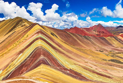

También conocida como la Capital Imperial, Cusco es uno de los epicentros turísticos más concurridos de todo el Perú, pues cerca de allí se levanta la majestuosa ciudadela de Machu Picchu.
A ello se suma un abanico de atractivos espacios arqueológicos, naturales, una exquisita gastronomía y la calidez de un pueblo dispuesto a hacerte sentir como en casa.
Cusco es la parada obligatoria para llegar a la ciudadela de Machu Picchu, edificación inca que integra la lista de las 7 Nuevas Maravillas del Mundo Moderno. Se trata de un gigantesco santuario construido con grandes bloques de piedra, que reposa en la cúspide de una montaña, entre los Andes y la Amazonía. Según investigaciones, su edificación se realizó en 1435, y habría tenido como finalidad ser un centro de investigación científica, pues era frecuentado por sacerdotes, ingenieros y especialistas.
A ello se suma un abanico de atractivos espacios arqueológicos, naturales, una exquisita gastronomía y la calidez de un pueblo dispuesto a hacerte sentir como en casa.
El culto al sol. Los antepasados incas apartaban una fecha en el calendario para rendir tributo al Dios Inti (que en español significa sol). Esta celebración, conocida como Inti Raymi, continúa vigente en la actualidad y es considerada Patrimonio Cultural de la Nación. Se celebra cada 24 de junio, día que marca el fin de la cosecha y el inicio del equinoccio invernal en los Andes del Perú.
|  |